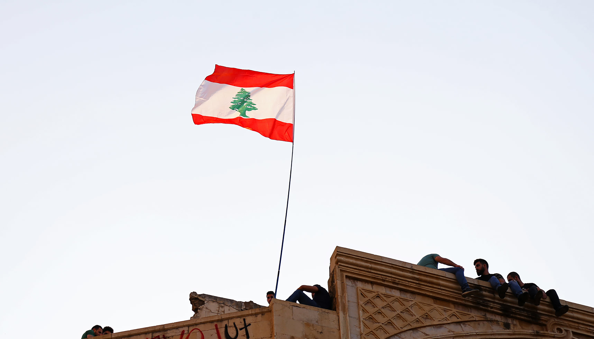

Voyager au Maghreb est bien plus qu'une simple aventure géographique,
c'est une plongée profonde dans un monde riche en arts, en culture et
en histoires captivantes. Imaginez-vous déambuler dans les ruelles
envoûtantes des médinas, où chaque coin de rue est une toile vivante,
peinte par des artisans habiles et passionnés. Les souks regorgent de
trésors artisanaux, des tapis berbères aux bijoux étincelants, en
passant par la poterie aux couleurs chatoyantes, autant d'œuvres d'art
authentiques qui reflètent l'âme de cette région.
Le Maghreb vous emmènera dans un voyage sonore tout aussi envoûtant,
avec ses musiques traditionnelles, mélange de rythmes africains et
orientaux, qui vous feront vibrer au son du oud et des percussions. Ne
manquez pas les festivals de musique et les spectacles de danse qui
éveilleront vos sens et vous transporteront dans un autre monde.
Mais le point d'orgue de votre voyage sera sans aucun doute la
rencontre avec les habitants chaleureux du Maghreb, qui vous
accueilleront avec un thé à la menthe et vous inviteront à découvrir
leurs traditions artistiques. Vous vivrez une expérience authentique
en participant à des ateliers d'artisanat, en apprenant les mouvements
de la danse orientale, ou en écoutant les récits envoûtants des
conteurs locaux.
Le Maghreb, c'est l'art à l'état pur, une invitation à explorer des
siècles d'histoire à travers la créativité de ses habitants.
Laissez-vous séduire par la magie des arts au Maghreb, une aventure
qui éveillera votre âme et élargira vos horizons, tout en vous
permettant de créer des souvenirs inoubliables. Osez le voyage au
Maghreb, où chaque rue, chaque note de musique et chaque sourire sont
des invitations à explorer une culture d'une richesse infinie.
Maghreb : Un Voyage Artistique Inoubliable
Explorez le Maghreb à travers une mosaïque d'arts captivants ! Dansez au rythme envoûtant du raï, dégustez des saveurs épicées de la cuisine locale, et découvrez l'histoire fascinante de cette région, où l'art et la culture s'entrelacent pour vous offrir une expérience de voyage inoubliable.
Appuyez

Texte pour l'image 4

Tunisie